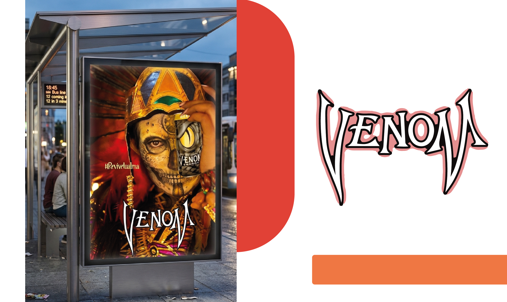
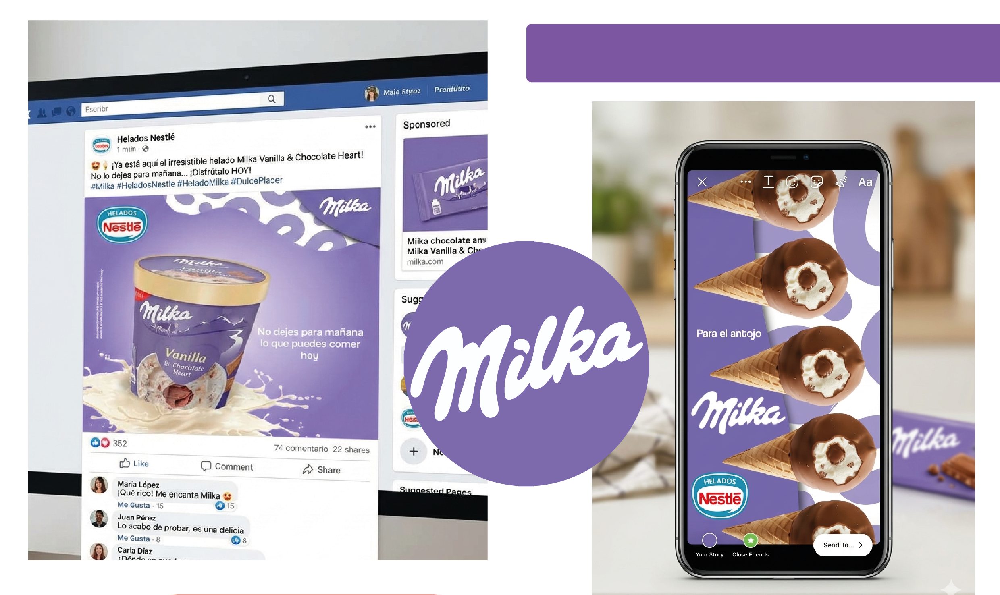
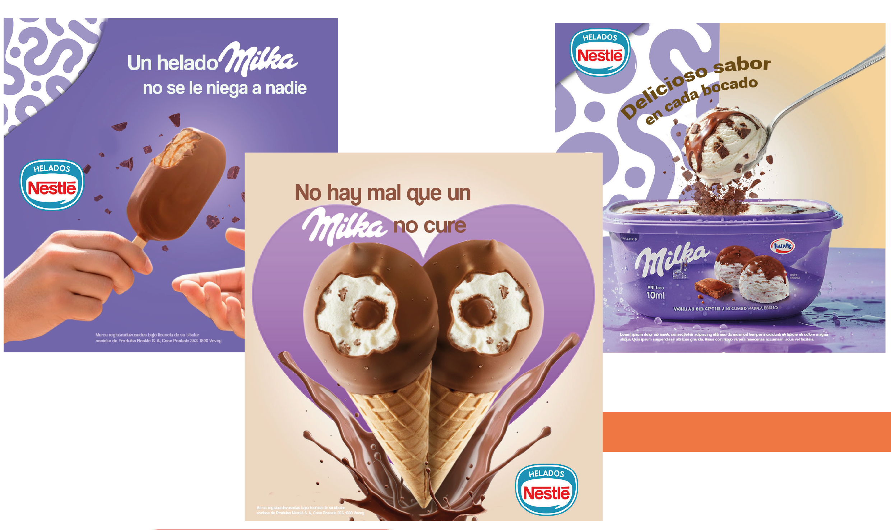

Proyectos con Publicidad e Imagen
Se trabajó en la publicidad para la marca de bebidas energéticas "venom" donde se dio la imagen con tematica de día de muertos. Otro proyecto fue la campaña publicitaria para la marca de helados "Milka" que consiste en publicidad para redesvsociales haciendo alución a refranes Mexicanos. Para identidad se desarrolló la imagen de una aplicación de finanzas llamada "Atenaro" desde nombre, logotipo y productos publicitarios:


